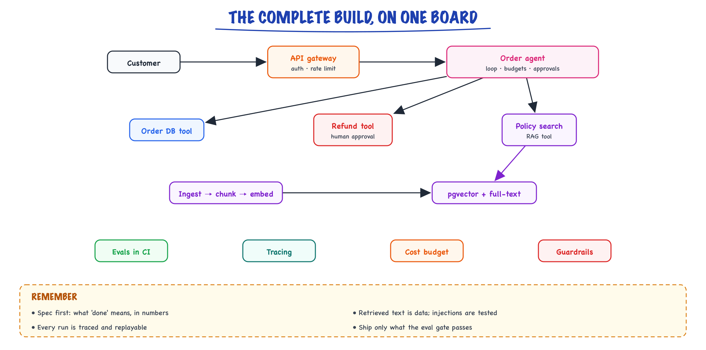

Complete build: spec & architecture // Build & interview
The system we build end to end: requirements, architecture and decisions.
01 — At a glance

The system built end to end in this stage: an order-support agent with tools, a knowledge layer for policy questions, and evals, tracing and budgets around it.
02 — The Complete Build 1/4 — spec & architecture
Everything so far was one topic at a time. This part builds one real system, end to end, making every decision explicitly and citing the chapter that justifies it. The system: an internal support knowledge agent — answers questions from company docs, looks up orders, files refund requests with approval. Realistic, bounded, contains every pattern in the book.
03 — Step −1 — the elicitation conversation that produces the spec
The spec below did not fall out of the sky. It came out of a one-hour conversation with three stakeholders: the support team lead (the user), the finance controller (owns refund risk), and the platform engineer (owns whatever gets deployed). Here is the shape of that conversation, condensed. These are the questions to ask on any AI project — notice that none of them mention models.
YOU: "Walk me through the last five tickets your team handled."
LEAD: Two were 'where is my order', one duplicate charge, one policy
question about enterprise refunds, one rant.
→ the task decomposes into LOOKUP, ACTION, KB-QUESTION, TRIAGE.
Four intents, not one. This single question shaped the router.
YOU: "What does a WRONG answer cost, versus a slow one?"
LEAD: Wrong policy answer → customer promised something we can't honor.
FINANCE: A bad refund is real money out; a missed one is a complaint.
→ asymmetric risk: hallucination is the expensive failure, latency
is the cheap one. Justifies grounding + abstention over speed.
YOU: "Who is allowed to see what?"
ENG: Support staff see their region's orders. Enterprise contract docs
are restricted to tier-2.
→ ACLs exist and MUST be enforced in retrieval, not in a prompt (2/4).
YOU: "What's the biggest refund you'd let software issue unattended?"
FINANCE: None, honestly... okay, $100 with a logged reason, reviewed weekly.
→ the approval gate and the $100 policy line are BORN HERE, as a
business decision — not something an engineer invents later.
YOU: "How will you know this thing is working, month two?"
LEAD: Fewer escalations to tier-2, faster handle time, no policy incidents.
→ the online metrics in 4/4: resolution rate, escalation rate, incidents.
YOU: "What must NEVER happen?"
ALL: Cross-customer data exposure. Invented policy. Refund over policy.
→ the FAILURE line of the spec, verbatim.If you only ask one question
Ask for the last N real examples of the task ("walk me through the last five tickets"). Stakeholders describe their work in abstractions; the examples contain the actual distribution — the intents, the edge cases, the vocabulary your eval set (2/4) will need. Five real tickets are worth fifty requirements-meeting adjectives.04 — Step 0 — write the spec BEFORE any AI code
TASK answer support questions grounded in docs; act on orders (lookup, refund ≤ $100) USERS ~200 support staff, ~3K questions/day, peak 15 concurrent SUCCESS ≥90% answers graded correct+grounded; 100% refunds within policy; zero PII leaks FAILURE unacceptable: invented policy, refund > policy, cross-customer data exposure LATENCY p95 ≤ 6s end-to-end answers; refunds may be async COST ≤ $0.03 per resolved question (we'll verify this with arithmetic in 4/4) FALLBACK low confidence or missing evidence → hand to human with context attached
Why the spec is step 0
Every downstream decision — model size, retrieval design, agent-vs-workflow, eval set — is derivable from these seven lines. Teams that skip this argue about prompts for months because nobody wrote down what "good" means. The spec IS the eval set in prose form.The seven lines above are the functional spec. Production systems also need the non-functional requirements written down, because "we never discussed it" is how systems ship without audit logs. Every row below traces back to a stakeholder sentence from the elicitation:
| NFR | Requirement | Consequence in the build |
|---|---|---|
| Availability | business hours critical; 99.5% monthly is fine (internal tool) | no multi-region; single-region + provider fallback model (Production & evals) |
| Latency | p95 ≤ 6s answers, first token ≤ 2s; refunds async | streaming from gateway; refund path returns a ticket, not a result |
| Throughput | 3K/day, peak 15 concurrent, 3× headroom | ~45 concurrent requests max → 3 stateless workers, provider rate-limit budget checked in 4/4 |
| Security | row-level ACLs by staff region/tier; no PII in traces | ACL filter in retrieval SQL (2/4); PII scrub before trace write |
| Auditability | every refund reconstructible: who, why, which evidence | append-only refunds + traces tables; 2-year retention |
| Data residency | docs may go to hosted APIs (legal signed off); customer PII minimized | order tool returns redacted views, not raw rows |
| Cost ceiling | ≤ $0.03/resolved question, ≤ $2.5K/month all-in | hosted APIs; self-hosting rejected by arithmetic (4/4) |
| Operability | on-call is 1 platform engineer, part-time | fewest possible moving parts; Postgres does triple duty |
05 — Step 1 — decide the shape (apply the decision guide honestly)
Walk the ladder from the agents part:
| Question | Answer | Consequence |
|---|---|---|
| Single prompt enough? | No — needs private docs + live order data | add RAG + tools |
| Path known in advance? | Mostly! classify → retrieve or act → answer | workflow spine, not free agent |
| Any genuinely open-ended piece? | Yes — multi-step order investigations ("why was I charged twice?") | one bounded agent loop inside the workflow, max 6 steps |
| Multi-agent? | No — single coherent thread, write-heavy answers (Multi-agent systems debate) | one agent, several tools |
This is the most common production shape in the wild: a router + workflow with one agentic pocket — not a swarm. The restraint is the design.
Two architectures we rejected, and why
Writing down the rejected alternatives is as valuable as the chosen one — six months later somebody will propose them again, and the reasoning should be findable, not re-litigated.
Rejected: one big agent with all the tools
Give a frontier model search_docs, get_order, refund_order, no router, let it figure everything out. Why rejected: (1) 80% of traffic is single-intent KB questions where an agent loop adds 2–4 LLM calls of latency and cost for zero quality gain — at 3K/day that is roughly 2–3× the per-question cost for the majority path; (2) the failure surface is the union of all tools on every request — a prompt-injected doc chunk sits in the same context as refund_order; (3) it's untestable as components: when quality drops you can't tell whether retrieval, routing, or synthesis regressed. The router makes each path separately measurable (Tools & agents).
Rejected: multi-agent (planner + researcher + refund specialist)
A planner agent decomposes the ticket, a research agent handles docs, a refund agent handles money, they message each other. Why rejected: (1) the task has no parallelizable read-heavy structure — it's one conversational thread with writes, exactly the shape Multi-agent systems says multi-agent handles worst (agents overwrite each other's assumptions); (2) inter-agent messages become an unauditable second protocol — the finance controller's question "who decided this refund?" must have a one-trace answer; (3) illustrative arithmetic: 3 agents × ~3 calls each ≈ 9 LLM calls/ticket versus ≤ 3 on our spine — p95 latency would blow the 6s budget before quality even enters the debate.
The seductive third rejection: fine-tune first
"Let's fine-tune a model on our support data, then it'll just know our policies." Rejected because (Fine-tuning & alignment): policies change weekly — a fine-tune bakes March's refund policy into weights that answer questions in June; RAG updates by re-indexing a doc. Fine-tuning also can't cite sources, and the spec requires groundedness you can verify. The flywheel in 4/4 revisits fine-tuning after a quarter of logged (question → great answer) pairs exists — as a cost optimization, not a knowledge store.06 — Step 2 — the architecture, with every box justified
user question
│
┌─────────▼─────────┐
│ GATEWAY │ auth, rate limit, request id, streaming (Production & evals)
└─────────┬─────────┘
┌─────────▼─────────┐
│ ROUTER (small LLM) │ intent: kb_question | order_action | other (Tools & agents routing)
│ forced tool schema │ → structured {intent, confidence} (Prompting structured out)
└───┬─────────┬─────┘
kb_question order_action other/low-conf ──► human queue + context
│ │
┌──────▼──────┐ ┌────▼──────────────────────────┐
│ RAG PIPELINE │ │ ORDER AGENT (bounded loop ≤6) │
│ hybrid │ │ tools: get_order, get_charges,│
│ retrieve → │ │ refund_order(idempotent, │
│ rerank → │ │ ≤$100 policy, approval gate) │ (Tool calling,6)
│ grounded gen │ └────┬──────────────────────────┘
│ + citations │ │
└──────┬──────┘ │
└──────┬──────┘
┌──────▼──────────┐
│ OUTPUT VALIDATION │ schema, citation check, PII scrub (Prompting,12)
└──────┬──────────┘
┌──────▼──────────┐
│ TRACE + FEEDBACK │ every step logged; thumbs + edits captured (Production & evals)
└──────────────────┘
Read the diagram as a risk gradient: the KB path (left) can at worst say something wrong with citations attached, which a support agent can check. The order path (right) can move money, so it gets every guard in the book — bounded loop, policy engine, idempotency, approval gate (3/4). The router's third arm — other/low-conf — is not an afterthought; per the spec's FALLBACK line, graceful handoff is a first-class outcome and roughly 8–12% of real traffic will take it.
07 — Step 2.5 — the data model (schema before prompts)
Five tables carry the whole system. Sketching them now surfaces the decisions prose hides: where ACLs live, what "idempotent refund" physically means, what a trace row must contain for the flywheel in 4/4 to work.
CREATE EXTENSION IF NOT EXISTS vector; -- knowledge layer (2/4). One row per chunk; content_hash drives incremental re-index. CREATE TABLE chunks ( chunk_id bigint GENERATED ALWAYS AS IDENTITY PRIMARY KEY, doc_id text NOT NULL, anchor text NOT NULL, -- stable deep-link into the source doc heading_trail text NOT NULL, -- 'Billing › Refunds › Enterprise' content text NOT NULL, content_hash text NOT NULL UNIQUE, -- sha256; unchanged chunk = skipped embed acl_groups text[] NOT NULL, -- enforced IN THE QUERY, never in prompt doc_version text NOT NULL, embedding vector(1024), -- pinned to embed model version below embed_model text NOT NULL, -- 'embed-v3'; mixed versions = silent recall loss tsv tsvector GENERATED ALWAYS AS (to_tsvector('english', content)) STORED, updated_at timestamptz NOT NULL DEFAULT now() ); CREATE INDEX ON chunks USING hnsw (embedding vector_cosine_ops); CREATE INDEX ON chunks USING gin (tsv); CREATE INDEX ON chunks USING gin (acl_groups); -- conversation state: Redis holds the hot session; this is the durable record. CREATE TABLE conversations ( conv_id uuid PRIMARY KEY, staff_id text NOT NULL, intent text, -- router verdict messages jsonb NOT NULL DEFAULT '[]', -- append-only message list status text NOT NULL DEFAULT 'open', -- open|resolved|escalated created_at timestamptz NOT NULL DEFAULT now() ); -- refunds: the idempotency key IS the primary key. A retried tool call -- (network blip, agent loop hiccup) physically cannot double-refund. CREATE TABLE refunds ( idempotency_key text PRIMARY KEY, order_id text NOT NULL, amount_usd numeric(8,2) NOT NULL CHECK (amount_usd > 0 AND amount_usd <= 100), reason text NOT NULL CHECK (reason IN ('duplicate_charge','defective','not_delivered')), status text NOT NULL DEFAULT 'proposed', -- proposed|approved|executed|rejected proposed_by text NOT NULL, -- staff id (the human on whose behalf) approved_by text, -- NULL until a human clicks approve conv_id uuid REFERENCES conversations(conv_id), created_at timestamptz NOT NULL DEFAULT now() ); -- traces: one row per LLM/tool step. This table feeds every eval and the flywheel (4/4). CREATE TABLE traces ( trace_id bigint GENERATED ALWAYS AS IDENTITY PRIMARY KEY, request_id text NOT NULL, conv_id uuid, step int NOT NULL, kind text NOT NULL, -- 'llm'|'tool'|'retrieval'|'validation' name text, -- tool name / model id payload jsonb NOT NULL, -- PII-scrubbed BEFORE insert tokens_in int, tokens_out int, latency_ms int, is_error bool DEFAULT false, created_at timestamptz NOT NULL DEFAULT now() ); CREATE INDEX ON traces (request_id); CREATE TABLE feedback ( request_id text PRIMARY KEY, thumbs smallint, -- -1 | 1 edited_text text, -- what the human actually sent (gold data!) created_at timestamptz NOT NULL DEFAULT now() );
Notice what the schema enforces that no prompt can: the CHECK on amount_usd means even a bug in the policy engine cannot write a $500 refund row; the refunds primary key makes idempotency a property of the database, not of careful code; embed_model on every chunk prevents the classic silent failure of querying v3 embeddings against a v2 index after a partial re-embed (2/4).
08 — Step 2.75 — the API surface (small on purpose)
Four endpoints. Everything else is internal. A small surface is what makes the gateway's auth, rate limiting and tracing tractable (Production & evals).
POST /v1/ask the single entry point for staff UI
in : { conv_id?, message, stream: true }
out: SSE stream of tokens, then a final event:
{ answer, citations: [{doc_id, anchor}], action?: {type:"refund_proposed",
idempotency_key, amount_usd, approval_url}, escalated?: {queue, context_url},
request_id }
err: 401 unauth · 429 per-staff rate limit · 503 provider outage (retry-after)
POST /v1/feedback thumbs + edited final text (feeds flywheel, 4/4)
in : { request_id, thumbs: -1|1, edited_text? }
POST /v1/refunds/{key}/decision the approval gate (tier-2 staff only)
in : { decision: "approve"|"reject", note }
out: { status } -- transitions proposed→approved→executed
GET /v1/health liveness + provider reachability + index freshness
Invariants the gateway enforces on every call:
• staff JWT → staff_id + acl_groups injected server-side (client can't claim ACLs)
• request_id issued here, threaded through every trace row
• 15 req/min per staff token bucket (spec: 15 concurrent peak, 3× headroom)One worked number before choosing infra: peak 15 concurrent questions × p95 6s each ≈ 2.5 questions/s peak. A single async FastAPI worker handles that trivially — the bottleneck will be provider rate limits, not CPU (illustrative sizing; 4/4 does the full arithmetic). Three workers exist for deploys and failure, not for load.
09 — Step 3 — model & infra choices (with reasons, not vibes)
| Decision | Choice | Reasoning chain |
|---|---|---|
| Router model | small/fast (Haiku-class) | 3-way classification; forced tool output; quality ceiling low, volume high → smallest model that passes router evals (measure! don't assume) |
| Answer/agent model | mid-tier (Sonnet-class) | grounded synthesis + tool reasoning; escalate individual hard cases, don't upgrade the fleet |
| Embeddings | hosted embedding API to start | corpus ~40K chunks — tiny; self-hosting an embedder saves nothing at this scale |
| Vector store | pgvector in existing Postgres | 40K vectors ≪ millions; team already operates Postgres; one fewer service (Knowledge & RAG selection rule) |
| Serving | hosted APIs; revisit self-host at ~50× volume | 4/4 does the arithmetic — at 3K q/day the GPU doesn't pay for itself |
| State/session | Redis (conversations), Postgres (audit) | workers stay stateless → horizontal scale (Production & evals) |
The mistake this avoids
Starting with "we need Kubernetes, a dedicated vector DB, a multi-agent framework and a fine-tune." At this scale that's ~4 services and 2 models more than the spec requires. Every box above earns its place from a spec line. Add infrastructure when a measurement fails, not before. Corollary gotchas: (1) picking the vector DB before counting your vectors — 40K × 1024 floats × 4 bytes ≈ 160MB, it fits in Postgres shared buffers; (2) sizing for "someday" traffic — 50× growth changes the right answer, so re-decide then with then's numbers; (3) letting the framework choose your shape — the router-plus-pocket topology came from the spec's ladder, and any framework that fights it is the wrong framework.Why one mid-tier model, not per-task micro-optimization
You could route synthesis to a small model for easy questions and mid-tier for hard ones. Rejected for now: the difficulty classifier is one more component to eval and a new failure mode (hard question misrouted to weak model = confident wrong answer, the spec's worst case). The cost worksheet in 4/4 shows the fleet already lands at ~55% of the cost ceiling without it. Optimize when the online $/resolved metric says so — the flywheel will tell you.Next: 2/4 builds the knowledge layer and proves it with retrieval numbers before an LLM ever writes an answer.
Exercises
- Run the elicitation script on a task you own: collect the last five real instances, ask the "what must never happen" and "biggest unattended action" questions, and write the seven-line spec. Time-box it to 90 minutes; check that every line is measurable.
- Take the NFR table and, for each row, write the specific test or query that would detect its violation in production (e.g., for auditability: reconstruct one refund end-to-end from
traces+refundsalone). If you can't write the check, the NFR isn't real yet. - Defend a rejection: write a one-page memo arguing for the multi-agent architecture this chapter rejected, then refute your own memo using the spec lines. Verify each refutation cites a spec line, not taste.
- Load the DDL into a scratch Postgres and try to insert a $250 refund and a duplicate idempotency key. Confirm the database — not application code — rejects both.
- Design the API surface for the same system if end customers (not staff) were the users. List every invariant that changes (auth, ACLs, rate limits, PII in responses) and what new spec lines you'd need.